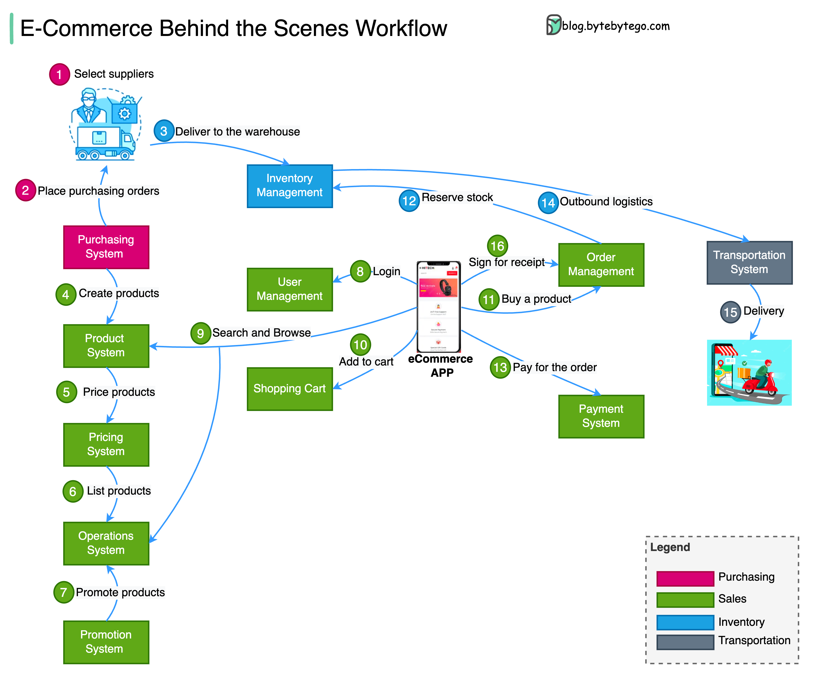

What happens behind the scenes when we shop online?
Disclaimer: I have limited knowledge of the eCommerce system. The diagram above is based on my research. Please suggest better names for the components or let me know if you spot an error.

The diagram above shows the 4 key business areas in a typical e-commerce company: procurement, inventory, eComm platform, and transportation.
Step 1 - The procurement department selects suppliers and manages contracts with them.
Step 2 - The procurement department places orders with suppliers, manages the return of goods, and settles invoices with suppliers.
Steps 4-7 - The “eComm platform - Product Management” system creates the product info managed by the product system. The pricing system prices the products. Then the products are ready to be listed for sale. The promotion system defines big sale activities, coupons, etc.
Step 8-11 - Consumers can now purchase products on the e-commerce APP. First, users register or log in to the APP. Next, users browse the product list and details, adding products to the shopping cart. They then place purchasing orders.
Steps 12,13 - The order management system reserves stock in the inventory management system. Then the users pay for the product.
Steps 14,15 - The inventory system sends the outbound order to the transportation system, which manages the physical delivery of the goods.
Step 16 - Sign for item delivery (optional)
Quick question: If a user buys many products, their big order might be divided into several small orders based on warehouse locations, product types, etc. Where would you place the “order splitting” system in the process outlined below?